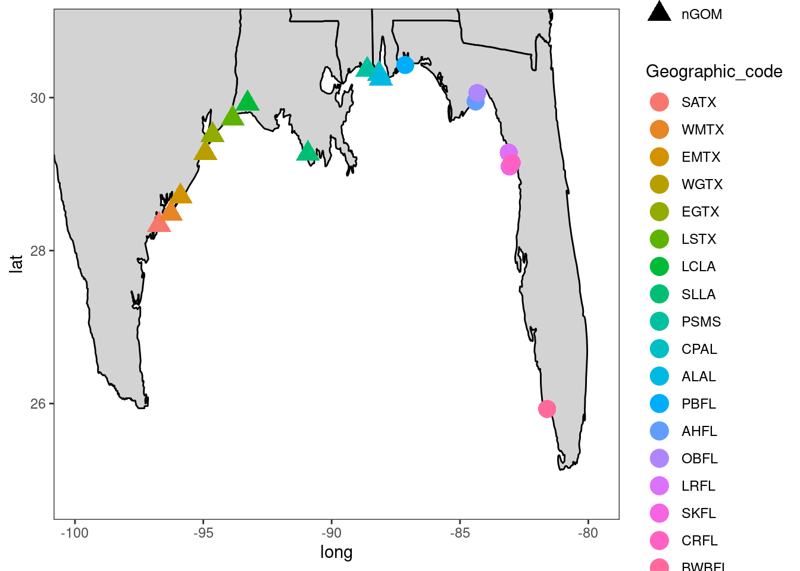
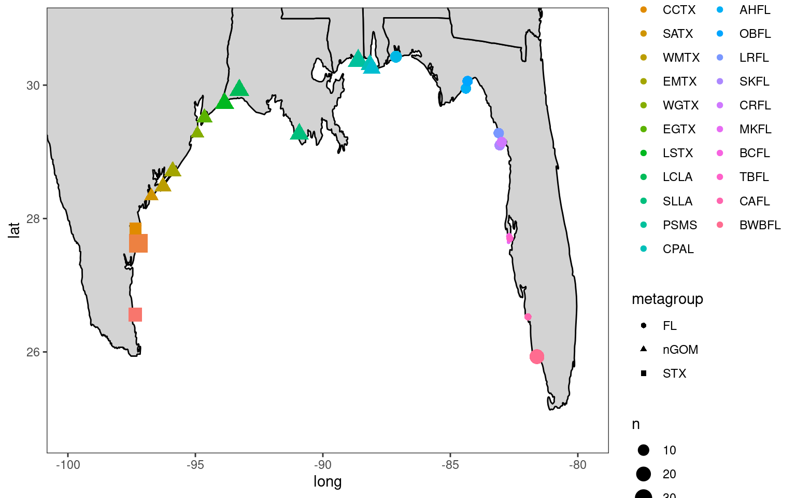

2 Input Data
2.1 Objective: Organize individual and SNP data
Organize and consolidate data from hundreds of C.virginica collected around the Gulf of Mexico genotyped on a high density SNP panel (~600K) developed by the East Coast consortium.
2.2 Individual Sample Information
General Gulf (GG) samples (n=404) and South Texas (STX) samples (n=76) were genotyped on 600K ThermoFisher array and analyzed separately. A unique genotyping probeset list was used for each sample set. 447 samples passed QA.
2.2.1 Basic sample information
“sample_info_SALT” data file provided by Eric Salliant of University of Southern Mississippi, includes data provided by ThermoFisher and metadata (e.g., geographic details of where oysters were collected).
suppressMessages(sample_info_SALT <- read_csv(here::here("data","raw","cvir_gulf_600K_ES.csv")))
sample_info_SALT$...1 <- NULLsample_info_SALT## # A tibble: 480 × 16
## Sample Filename SubmittedPlate sample_id Geographic_code Collection_data SampleName
## <chr> <chr> <chr> <chr> <chr> <chr> <chr>
## 1 a551319-444806… 9SR48340 F12 BWBFL_1 BWBFL 25.92860, -81.… Customer
## 2 a551319-444806… 9SR48340 G08 BWBFL_10 BWBFL 25.92860, -81.… Customer
## 3 a551319-444806… 9SR48340 G09 BWBFL_11 BWBFL 25.92860, -81.… Customer
## 4 a551319-444806… 9SR48340 G10 BWBFL_12 BWBFL 25.92860, -81.… Customer
## 5 a551319-444806… 9SR48340 G11 BWBFL_14 BWBFL 25.92860, -81.… Customer
## 6 a551319-444806… 9SR48340 G12 BWBFL_15 BWBFL 25.92860, -81.… Customer
## 7 a551319-444806… 9SR48340 H01 BWBFL_16 BWBFL 25.92860, -81.… Customer
## 8 a551319-444806… 9SR48340 H02 BWBFL_17 BWBFL 25.92860, -81.… Customer
## 9 a551319-444806… 9SR48340 H03 BWBFL_18 BWBFL 25.92860, -81.… Customer
## 10 a551319-444806… 9SR48340 H04 BWBFL_19 BWBFL 25.92860, -81.… Customer
## # ℹ 470 more rows
## # ℹ 9 more variables: SampleSource <chr>, SampleType <chr>, Species <chr>,
## # Concentration <dbl>, PlateName <chr>, Rename <chr>, Reproducibility <dbl>, Gender <chr>,
## # SampleOrigin <chr>“sample_info_RAD” data file provided by Amanda Barker of the Marine Genomics Lab, it is data of a TPWD and Marine Genomics Lab project using RAD
suppressMessages(sample_info_RAD <-read_csv(here::here("data","raw","oyster_genotyped_sample_info.csv")))
sample_info_RAD$...1 <- NULLsample_info_RAD## # A tibble: 463 × 14
## lib_id sample_id barcode index site lib region gulf_location state bay latitude
## <chr> <chr> <chr> <chr> <chr> <dbl> <chr> <chr> <chr> <chr> <dbl>
## 1 apa_01 59751 TCAGT index_04 apalachic… 1 north… Eastern FL Apal… 29.7
## 2 apa_02 59752 AGCTA index_04 apalachic… 1 north… Eastern FL Apal… 29.7
## 3 apa_03 59753 CGGTA index_04 apalachic… 1 north… Eastern FL Apal… 29.7
## 4 apa_04 59754 GGATA index_04 apalachic… 1 north… Eastern FL Apal… 29.7
## 5 apa_05 59755 TCCGG index_04 apalachic… 1 north… Eastern FL Apal… 29.7
## 6 apa_06 59756 ACACA index_04 apalachic… 1 north… Eastern FL Apal… 29.7
## 7 apa_07 59757 GCATG index_03 apalachic… 1 north… Eastern FL Apal… 29.7
## 8 apa_08 59758 ACTGG index_03 apalachic… 1 north… Eastern FL Apal… 29.7
## 9 apa_09 59759 CTGCG index_03 apalachic… 1 north… Eastern FL Apal… 29.7
## 10 apa_10 59760 GTCCG index_03 apalachic… 1 north… Eastern FL Apal… 29.7
## # ℹ 453 more rows
## # ℹ 3 more variables: longitude <dbl>, tidal.zone <chr>, harvest <chr>Some sample info from the RAD dataset was in a seperate file
missingdata <-read_csv(here::here("data","raw","missing_cvir.csv"))
missingdata## # A tibble: 5 × 8
## sample_id gulf_location state bay latitude longitude `tidal zone` harvest
## <dbl> <chr> <chr> <chr> <dbl> <dbl> <chr> <chr>
## 1 60111 Southwestern TX-Lower Upper Laguna Madre 27.6 -97.2 Intertidal No
## 2 60113 Southwestern TX-Lower Upper Laguna Madre 27.6 -97.2 Intertidal No
## 3 60008 Southwestern TX-Lower Port Mansfield 26.6 -97.4 Intertidal No
## 4 60012 Southwestern TX-Lower Port Mansfield 26.6 -97.4 Intertidal No
## 5 60013 Southwestern TX-Lower Port Mansfield 26.6 -97.4 Intertidal No# add missing data with RAD data
library(plyr)
sample_info_RADx <- rbind.fill(sample_info_RAD,missingdata)
detach("package:plyr", unload=TRUE)2.2.2 Quality control info from Thermo Fisher
#read in QC data for both data sets
#not sure how to use read_table to imitate read.table, so "here" tabled for now
#other_qc <- read_table(here::here("data","raw","other_genotypingQC.report.txt"), col_names = TRUE)
other_qc <- read.table("data/raw/other_genotypingQC.report.txt",fill=TRUE, header = TRUE)
south_qc <- read.table("data/raw/south_genotypingQC.report.txt", fill = TRUE, header=TRUE)
#add column of data_set - "other" or "south_texas"
other_qc$data_set <- "other"
south_qc$data_set <- "south_texas"
#rbind "other" and "south_texas" data frames
qc_indv <- rbind(other_qc,south_qc)
#rename in QC "celfiles" to "Sample"
qc_indv <- qc_indv %>% rename(Sample = cel_files)
as_tibble(qc_indv)## # A tibble: 473 × 19
## Sample computed_gender call_rate total_call_rate het_rate total_het_rate hom_rate
## <chr> <dbl> <dbl> <dbl> <dbl> <dbl> <dbl>
## 1 a551319-4448066-… 99.0 99.0 21.6 21.6 77.4 77.4
## 2 a551319-4448066-… 99.3 99.3 22.0 22.0 77.2 77.2
## 3 a551319-4448066-… 99.2 99.2 21.8 21.8 77.4 77.4
## 4 a551319-4448066-… 99.4 99.4 22.0 22.0 77.4 77.4
## 5 a551319-4448066-… 99.4 99.4 22.6 22.6 76.8 76.8
## 6 a551319-4448066-… 99.4 99.4 22.8 22.8 76.6 76.6
## 7 a551319-4448066-… 99.1 99.1 20.9 20.9 78.2 78.2
## 8 a551319-4448066-… 99.4 99.4 22.7 22.7 76.7 76.7
## 9 a551319-4448066-… 99.1 99.1 20.3 20.3 78.8 78.8
## 10 a551319-4448066-… 99.2 99.2 20.8 20.8 78.5 78.5
## # ℹ 463 more rows
## # ℹ 12 more variables: total_hom_rate <dbl>, cluster_distance_mean <dbl>,
## # cluster_distance_stdev <dbl>, allele_summarization_mean <dbl>,
## # allele_summarization_stdev <dbl>, allele_deviation_mean <dbl>,
## # allele_deviation_stdev <dbl>, allele_mad_residuals_mean <dbl>,
## # allele_mad_residuals_stdev <dbl>, affymetrix.plate.barcode <chr>,
## # affymetrix.plate.peg.wellposition <lgl>, data_set <chr>2.2.3 List of oysters that passed the genotyping according to ThermoFisher
gg_qc_filt <- read.table("data/raw/other_sample_QCFilteredCR.txt",fill = TRUE, header = TRUE)
passed_GG <- gg_qc_filt$cel_files
st_qc_filt <- read.table("data/raw/south_sample_QCFilteredCR.txt",fill = TRUE, header = TRUE)
passed_ST <- st_qc_filt$cel_files2.2.4 Merge Files
Consolidate all identifying information on samples to “sample_info_full”
#merge sample_info_SALT and sample_info_RAD
sample_info <- merge(x = sample_info_SALT, y = sample_info_RADx, all.x = TRUE)
#add quality control data, filter out only individuals that passed Thermo's quality control
sample_info_full <- sample_info %>%
merge(qc_indv, all.x = TRUE) %>%
filter (Sample %in% passed_GG | Sample %in% passed_ST)
#some individuals have multiple rows in the data set, with the only varying information the lib_id, barcode, and index columns, likely RAD information. Below, choose only one row for these individuals: a551319-4448066-110623-383_A04.CEL and a551319-4448066-110623-383_A08.CEL
sample_info_full <- sample_info_full %>%
distinct(Sample, .keep_all = TRUE)
#add a "locaton" column for the RAD data
sample_info_full$location <- paste(sample_info_full$bay,sample_info_full$state,sep=",")
#remove all periods and hyphens from sample name (causes issues downstream)
sample_info_full$Sample <- gsub("\\.","", sample_info_full$Sample)
sample_info_full$Sample <- gsub("_","", sample_info_full$Sample)
sample_info_full$Sample <- gsub("-","", sample_info_full$Sample)
as_tibble(sample_info_full)## # A tibble: 447 × 49
## Sample sample_id Filename SubmittedPlate Geographic_code Collection_data SampleName
## <chr> <chr> <chr> <chr> <chr> <chr> <chr>
## 1 a5513194448066… Auburn_1 9SR48342 A01 Auburn selecte… Auburn selecte… Customer
## 2 a5513194448066… Auburn_2 9SR48342 A02 Auburn selecte… Auburn selecte… Customer
## 3 a5513194448066… Auburn_3 9SR48342 A03 Auburn selecte… Auburn selecte… Customer
## 4 a5513194448066… Auburn_4 9SR48342 A04 Auburn selecte… Auburn selecte… Customer
## 5 a5513194448066… Auburn_6 9SR48342 A05 Auburn selecte… Auburn selecte… Customer
## 6 a5513194448066… Auburn_7 9SR48342 A06 Auburn selecte… Auburn selecte… Customer
## 7 a5513194448066… Auburn_8 9SR48342 A07 Auburn selecte… Auburn selecte… Customer
## 8 a5513194448066… Auburn_9 9SR48342 A08 Auburn selecte… Auburn selecte… Customer
## 9 a5513194448066… Auburn_10 9SR48342 A09 Auburn selecte… Auburn selecte… Customer
## 10 a5513194448066… Auburn_11 9SR48342 A10 Auburn selecte… Auburn selecte… Customer
## # ℹ 437 more rows
## # ℹ 42 more variables: SampleSource <chr>, SampleType <chr>, Species <chr>,
## # Concentration <dbl>, PlateName <chr>, Rename <chr>, Reproducibility <dbl>, Gender <chr>,
## # SampleOrigin <chr>, lib_id <chr>, barcode <chr>, index <chr>, site <chr>, lib <dbl>,
## # region <chr>, gulf_location <chr>, state <chr>, bay <chr>, latitude <dbl>,
## # longitude <dbl>, tidal.zone <chr>, harvest <chr>, `tidal zone` <chr>,
## # computed_gender <dbl>, call_rate <dbl>, total_call_rate <dbl>, het_rate <dbl>, …2.2.5 Tidy Up Lat/Long Data and Site Codes
Fix inconsistencies in geographic data and site codes
#lat and long data differs in format for samples from SALT and RAD data files
# 1 - tidy up lat and long from SALT data files
sample_info_full$lat<-substr(sample_info_full$Collection_data,1,8)
sample_info_full$long<-str_sub(sample_info_full$Collection_data,-10)
sample_info_full$long <- gsub("_","", sample_info_full$long)
sample_info_full$long <- gsub(" ","", sample_info_full$long)
# 2 - add the SALT lat and long data to the latitude and longitude
sample_info_full$latitude <- ifelse(is.na(sample_info_full$latitude),
as.numeric(sample_info_full$lat),sample_info_full$latitude)
sample_info_full$longitude <- ifelse(is.na(sample_info_full$longitude),
as.numeric(sample_info_full$long),sample_info_full$longitude)
# 3 - as numeric lat and long data
sample_info_full$latitude <- as.numeric(sample_info_full$latitude)
sample_info_full$longitude <- as.numeric(sample_info_full$longitude)
# - 4 add "geographic_code" information to those without it
sample_info_full$Geographic_code<-as.character(sample_info_full$Geographic_code)
#ULTX 1/2
sample_info_full$Geographic_code <- ifelse(sample_info_full$bay %in% "Upper Laguna Madre","ULTX", sample_info_full$Geographic_code)
#ULTX 2/2
sample_info_full$Geographic_code <- ifelse(sample_info_full$sample_id %like% "ULM","ULTX",sample_info_full$Geographic_code) #like requires data.table package
#PMTX Port Mansfield Texas
sample_info_full$Geographic_code <- ifelse(sample_info_full$bay %in% "Port Mansfield","PMTX", sample_info_full$Geographic_code)
#Corpus Christi Bay Texas
sample_info_full$Geographic_code <- ifelse(sample_info_full$site %in% "corpus_christi","CCTX", sample_info_full$Geographic_code)
#Tampa Bay FL
sample_info_full$Geographic_code <- ifelse(sample_info_full$lib_id %in% c("tam_01","tam_04","tam_05","tam_06"),"TBFL", sample_info_full$Geographic_code)
#Boca Ciega Bay Aquatic Preserve FL
sample_info_full$Geographic_code <- ifelse(sample_info_full$lib_id %in% c("tam_20","tam_22","tam_23"),"BCFL", sample_info_full$Geographic_code)
#Madelaine Key, FL
sample_info_full$Geographic_code <- ifelse(sample_info_full$lib_id %in% c("tam_17","tam_18"),"MKFL", sample_info_full$Geographic_code)
#Caloosahatchee River, FL
sample_info_full$Geographic_code <- ifelse(sample_info_full$lib_id %in% c("car_01","car_03","car_05","car_07"),"CAFL", sample_info_full$Geographic_code)
# - 5 add lat and long to ULM obs that do not have this info
sample_info_full$latitude <- ifelse(sample_info_full$Geographic_code %in% "ULTX",27.63083,sample_info_full$latitude)
sample_info_full$longitude <- ifelse(sample_info_full$Geographic_code %in% "ULTX",-97.24018,sample_info_full$longitude)2.2.6 Organize oysters into “metagroup” categories:
- South Texas (STX)
- northern Gulf of Mexico (nGOM)
- Florida (FL)
- Selected Line - Auburn nGOM
- Selected Line - Auburn FL
- Selected Line - OBOY
sample_info_full$metagroup <- "selected lines"
sample_info_full$metagroup <- ifelse(sample_info_full$Geographic_code %in% c("AHFL","BWBFL",
"OBFL","LRFL",
"CRFL",
"PBFL","SKFL",
"CAFL","TBFL",
"MKFL",
"BCFL"),"FL",sample_info_full$metagroup)
sample_info_full$metagroup <- ifelse(sample_info_full$Geographic_code %in% c("ALAL","CPAL",
"EGTX","EMTX",
"LCLA","LSTX",
"PSMS","SATX",
"SLLA","WGTX",
"WMTX"),"nGOM",sample_info_full$metagroup)
sample_info_full$metagroup <- ifelse(sample_info_full$Geographic_code %in% c("ULTX","PMTX",
"CCTX"),"STX",sample_info_full$metagroup)
sample_info_full$metagroup <- ifelse(sample_info_full$Collection_data %in% "Auburn selected line 1",
"Selected Line - Auburn nGOM",sample_info_full$metagroup)
sample_info_full$metagroup <- ifelse(sample_info_full$Collection_data %in% "Auburn selected line 2",
"Selected Line - Auburn FL",sample_info_full$metagroup)
sample_info_full$metagroup <- ifelse(sample_info_full$Collection_data %in% "O'Boy selected line",
"Selected Line - OBOY",sample_info_full$metagroup)#order the factor levels for geographic code based on longitude (move west to east)
library(dplyr)
sample_info_full<-arrange(sample_info_full,longitude)
sample_info_full$Geographic_code<-factor(sample_info_full$Geographic_code, levels=c("PMTX","ULTX","CCTX","SATX","WMTX","EMTX","WGTX","EGTX","LSTX","LCLA","SLLA","PSMS","CPAL","ALAL","PBFL","AHFL","OBFL","LRFL","SKFL","CRFL","MKFL","BCFL","TBFL","CAFL","BWBFL"))2.2.7 Map sites where samples were collected
Site codes and site names:
- PMTX ~ Port Mansfield
- ULTX ~ Upper Laguna Madre
- CCTX ~ Corpus Christi Bay
- SATX ~ San Antonio Bay
- WMTX ~ West Matagorda Bay
- EMTX ~ East Matagorda Bay
- WGTX ~ West Galveston Bay
- EGTX ~ East Galveston Bay
- LSTX ~ Sabine Pass
- LCLA ~ Calcasieu Lake
- SLLA ~ Caillou Lake
- PSMS ~ Pascagoula River
- CPAL ~ Cedar Point
- ALAL ~ Alligator Lake
- PBFL ~ Pensacola Bay
- AHFL ~ Alligator Harbor
- OBFL ~ Oyster Bay
- LRFL ~ Suwannee River
- SKFL ~ Seahorse Key
- CRFL ~ Corrigan Reef
- MKFL ~ Madelaine Key
- BCFL ~ Boca Ciega Bay Aquatic Preserve
- TBFL ~ Tampa Bay
- CAFL ~ Caloosahatchee River
- BWBFL ~ Backwater Bay
MainStates <- map_data("state")
ggplot()+
geom_polygon(data=MainStates,aes(x=long,y=lat,group=group),fill="lightgray", color="black") +
theme_bw()+
theme(panel.grid.major = element_blank())+
theme(panel.grid.minor = element_blank())+
coord_cartesian(xlim=c(-99.830000,-79.783711), ylim = c(24.783218,30.858945)) +
geom_point(data = sample_info_full %>%
filter(!Collection_data == "Auburn selected line 2") %>%
filter(!Collection_data == "O'Boy selected line") %>%
filter(!Collection_data == "Auburn selected line 1"), #remove the selected lines from mapping
aes(y = latitude, x = longitude, group=Geographic_code,colour=Geographic_code,shape = metagroup),
size=5,stroke=0.5)
Map representing the relative number of samples collected in each location
ggplot()+
geom_polygon(data=MainStates,aes(x=long,y=lat,group=group),fill="lightgray", color="black") +
theme_bw()+
theme(panel.grid.major = element_blank())+
theme(panel.grid.minor = element_blank())+
coord_cartesian(xlim=c(-99.830000,-79.783711), ylim = c(24.783218,30.858945)) +
geom_point(data = sample_info_full %>%
mutate(latitude2 = round(latitude,3)) %>%
mutate(longitude2 = round(longitude,3)) %>%
count(Geographic_code,metagroup,longitude2,latitude2) %>%
mutate_at(c('longitude2', 'latitude2'), as.numeric) %>%
filter(!metagroup == "Selected Line - Auburn FL") %>%
filter(!metagroup == "Selected Line - Auburn nGOM") %>%
filter(!metagroup == "Selected Line - OBOY"),
#counts for proportional representation
aes(y = latitude2, x = longitude2, group=Geographic_code,colour=Geographic_code,shape = metagroup,size = n),
stroke=0.5)
#produce blank map to add points to later
blank_map <- ggplot()+
geom_polygon(data=MainStates,aes(x=long,y=lat,group=group),fill="grey90", color="black") +
theme_bw()+
theme(panel.grid.major = element_blank())+
theme(panel.grid.minor = element_blank())+
coord_cartesian(xlim=c(-99.830000,-79.783711), ylim = c(24.783218,30.858945))#add site codes to individual data
sample_info_full <- sample_info_full %>%
mutate(Geographic_location = case_when(
Geographic_code %in% "PMTX" ~ "Port Mansfield",
Geographic_code %in% "ULTX" ~ "Upper Laguna Madre",
Geographic_code %in% "CCTX" ~ "Corpus Christi Bay",
Geographic_code %in% "SATX" ~ "San Antonio Bay",
Geographic_code %in% "WMTX" ~ "West Matagorda Bay",
Geographic_code %in% "EMTX" ~ "East Matagorda Bay",
Geographic_code %in% "WGTX" ~ "West Galveston Bay",
Geographic_code %in% "EGTX" ~ "East Galveston Bay",
Geographic_code %in% "LSTX" ~ "Sabine Pass",
Geographic_code %in% "LCLA" ~ "Calcasieu Lake",
Geographic_code %in% "SLLA" ~ "Caillou Lake",
Geographic_code %in% "PSMS" ~ "Pascagoula River",
Geographic_code %in% "CPAL" ~ "Cedar Point",
Geographic_code %in% "ALAL" ~ "Alligator Lake",
Geographic_code %in% "PBFL" ~ "Pensacola Bay",
Geographic_code %in% "AHFL" ~ "Alligator Harbor",
Geographic_code %in% "OBFL" ~ "Oyster Bay",
Geographic_code %in% "LRFL" ~ "Suwannee River",
Geographic_code %in% "SKFL" ~ "Seahorse Key",
Geographic_code %in% "CRFL" ~ "Corrigan Reef",
Geographic_code %in% "MKFL" ~ "Madelaine Key",
Geographic_code %in% "BCFL" ~ "Boca Ciega Bay Aquatic Preserve",
Geographic_code %in% "TBFL" ~ "Tampa Bay",
Geographic_code %in% "CAFL" ~ "Caloosahatchee River",
Geographic_code %in% "BWBFL" ~ "Backwater Bay")) %>%
mutate(Geographic_state = case_when(
str_sub(Geographic_code,-2) %in% "TX" ~ "Texas",
str_sub(Geographic_code,-2) %in% "LA" ~ "Louisiana",
str_sub(Geographic_code,-2) %in% "MS" ~ "Mississippi",
str_sub(Geographic_code,-2) %in% "AL" ~ "Alabama",
str_sub(Geographic_code,-2) %in% "FL" ~ "Florida"))Table of genotyped samples categorized by location of collection
sample_info_full %>%
count(Geographic_code,Geographic_location,Geographic_state,metagroup) %>%
head()## Geographic_code Geographic_location Geographic_state metagroup n
## 1 PMTX Port Mansfield Texas STX 19
## 2 ULTX Upper Laguna Madre Texas STX 42
## 3 CCTX Corpus Christi Bay Texas STX 14
## 4 SATX San Antonio Bay Texas nGOM 11
## 5 WMTX West Matagorda Bay Texas nGOM 16
## 6 EMTX East Matagorda Bay Texas nGOM 18Table of genotyped samples categorized by the region of collection - south Texas (STX), northern Gulf of Mexico (nGOM), Florida (FL), and individuals from selected lines (selected lines)
sample_info_full %>%
count(metagroup)## metagroup n
## 1 FL 101
## 2 STX 75
## 3 Selected Line - Auburn FL 22
## 4 Selected Line - Auburn nGOM 23
## 5 Selected Line - OBOY 22
## 6 nGOM 2042.3 SNP Information
Total: 566,262
SNPs considered ‘recommended’ for downstream analysis by ThermoFisher if fit in one of the following categories:
PolyHighResolution: SNPs with well-separated genotype clusters and two or more alleles in the genotype calls
NoMinorHom: SNPs with well-separated genotype clusters; one cluster is homozygous and one is heterozygous for biallelic SNPs, only one homozygous cluster and one or more heterozygous clusters appear for multiallelic SNPs
MonoHighResolution: SNPs with one well-formed genotype cluster; must be homozygous
Recommended “other” cluster (GG): 207,534
Recommended “south” cluster (ST): 152,260
Recommended in both clusters: 105,363
Only SNPs recommended for both GG and ST analyzed here (the 105,363)
2.3.1 General Information on SNPs
#read in general info
snp_info <- read.table("data/raw/snp_info_cv_ECarray_header_edited.txt", fill = TRUE , header = TRUE )
#rename general info column "ID" to "probeset_id" to match with genotyped files
snp_info <- snp_info %>% rename(probeset_id = ID_Name)
as_tibble(snp_info)## # A tibble: 582,726 × 31
## ReporterKey Affx probeset_id Sequence SNPType ProbeCount Tile Replicates DesignNumber
## <chr> <chr> <chr> <chr> <chr> <chr> <chr> <chr> <chr>
## 1 531501570 Affx-1248… AX-5782382… CCTGCCC… Y 2 1 2 1
## 2 531501571 Affx-1248… AX-5782382… ATGATTG… K 2 1 2 1
## 3 531501572 Affx-1248… AX-5782382… AGAGGGA… R 2 1 2 1
## 4 531422636 Affx-1248… AX-5781595… CCTGATA… Y 2 1 2 1
## 5 531421883 Affx-1248… AX-5781587… GGCGGAT… K 2 1 2 1
## 6 531422066 Affx-1248… AX-5781589… AGCCGCG… M 2 1 2 1
## 7 531501573 Affx-1248… AX-5782382… TGGTGCA… R 2 1 2 1
## 8 531421986 Affx-1248… AX-5781588… ACGTT[C… Y 2 1 2 1
## 9 531501574 Affx-1248… AX-5782382… ATTGAAG… Y 2 1 2 1
## 10 531422050 Affx-1248… AX-5781589… GTGGCTT… K 2 1 2 1
## # ℹ 582,716 more rows
## # ℹ 22 more variables: Rank <chr>, Strand <chr>, SetBack <chr>, taxonomy_key <chr>,
## # organism <chr>, cust_id <chr>, cust_chr <chr>, cust_pos <chr>, cust_ref <chr>,
## # cust_alt <chr>, cust_source <chr>, cust_gene_id <chr>, cust_gene_name <chr>,
## # cust_snptype <chr>, cust_other_id <chr>, cust_validation <chr>, cust_cn_region <chr>,
## # tiling_order <chr>, importance <chr>, pconvert <chr>, recommendation <chr>, Error <chr>2.3.2 Recommended SNPs
SNPs recommended by ThermoFisher for both GG and ST
#list of recommended SNPs for each sample set
other_rec <- read.table("data/raw/other_Recommended.ps", header = TRUE)
south_rec <- read.table("data/raw/south_Recommended.ps", header = TRUE)
#merge recommended SNPs for each sample set
combined_rec <- merge(other_rec, south_rec)
combined_rec %>% head()## probeset_id
## 1 AX-168593894
## 2 AX-168612286
## 3 AX-562727784
## 4 AX-562727806
## 5 AX-562727827
## 6 AX-5627281382.3.3 Quality control info
Quality control data on SNPs from ThermoFisher
#read in QC data for both data sets
other_qc_snp <- read.table("data/raw/other_Ps.performance.txt", fill = TRUE,header=TRUE)
south_qc_snp <- read.table("data/raw/south_Ps.performance.txt", fill = TRUE, header=TRUE)
#add column of data_set - "other" or "south_texas"
other_qc_snp$cluster <- "other"
south_qc_snp$cluster <- "south_texas"
#rbind qc data for both data sets
qc_snp <- rbind(other_qc_snp,south_qc_snp)
#select only SNPs recommended for both clusters
qc_snp_rec<-merge(qc_snp,combined_rec)
as_tibble(qc_snp_rec)## # A tibble: 210,726 × 25
## probeset_id affy_snp_id CR FLD HomFLD HetSO HomRO nMinorAllele Nclus n_AA n_AB n_BB
## <chr> <chr> <dbl> <dbl> <dbl> <dbl> <dbl> <int> <int> <int> <int> <int>
## 1 AX-1685938… Affx-12468… 99.7 7.46 NA 0.952 3.53 2 2 0 2 369
## 2 AX-1685938… Affx-12468… 100 7.22 15.4 0.714 2.63 70 3 28 24 23
## 3 AX-1686122… Affx-12459… 98.7 5.97 12.2 0.518 2.64 86 3 12 62 293
## 4 AX-1686122… Affx-12459… 97.3 5.19 11.3 0.205 1.71 8 3 2 4 67
## 5 AX-5627277… Affx-12468… 98.7 4.94 NA -0.166 2.76 3 2 0 3 71
## 6 AX-5627277… Affx-12468… 99.5 6.52 15.1 0.508 2.90 26 3 2 22 346
## 7 AX-5627278… Affx-12365… 97.3 8.20 17.7 0.247 2.74 14 3 61 10 2
## 8 AX-5627278… Affx-12365… 99.7 9.11 19.1 0.756 3.11 368 3 104 166 101
## 9 AX-5627278… Affx-12365… 100 4.75 NA 1.30 2.10 2 3 67 2 0
## 10 AX-5627278… Affx-12365… 100 5.63 15.6 0.540 2.36 46 3 330 38 4
## # ℹ 210,716 more rows
## # ℹ 13 more variables: n_NC <int>, hemizygous <int>, specialSNP_chr <chr>,
## # gender_metrics <chr>, ConversionType <chr>, BestProbeset <int>, BestandRecommended <int>,
## # HomHet <int>, MMD <dbl>, MinorAlleleFrequency <dbl>, H.W.p.Value <dbl>,
## # H.W.chisquared.statistic <dbl>, cluster <chr>2.3.4 Merge Files
Consolidate information on SNPs into one file “snp_info_full.txt”
#merge recommended and general info
#note the final file has two rows for each SNP (based on whether it is in the 'other' or 'south_texas' cluster)
snp_info_full <- merge(combined_rec, snp_info)
snp_info_full <- merge(snp_info_full, qc_snp_rec)
#remove "-" in probeset id
snp_info_full$probeset_id <- gsub("-","", snp_info_full$probeset_id)
as_tibble(snp_info_full)## # A tibble: 210,726 × 55
## probeset_id ReporterKey Affx Sequence SNPType ProbeCount Tile Replicates DesignNumber
## <chr> <chr> <chr> <chr> <chr> <chr> <chr> <chr> <chr>
## 1 AX168593894 530224709 Affx-1246… TTGTCTT… Y 2 1 2 1
## 2 AX168593894 530224709 Affx-1246… TTGTCTT… Y 2 1 2 1
## 3 AX168612286 526588721 Affx-1245… GTTTAAT… Y 2 1 2 1
## 4 AX168612286 526588721 Affx-1245… GTTTAAT… Y 2 1 2 1
## 5 AX562727784 527308034 Affx-1246… GAGGAAA… Y 2 1 2 1
## 6 AX562727784 527308034 Affx-1246… GAGGAAA… Y 2 1 2 1
## 7 AX562727806 513178708 Affx-1236… GCTAAGT… R 2 1 2 1
## 8 AX562727806 513178708 Affx-1236… GCTAAGT… R 2 1 2 1
## 9 AX562727827 513178729 Affx-1236… GGTCATG… Y 2 1 2 1
## 10 AX562727827 513178729 Affx-1236… GGTCATG… Y 2 1 2 1
## # ℹ 210,716 more rows
## # ℹ 46 more variables: Rank <chr>, Strand <chr>, SetBack <chr>, taxonomy_key <chr>,
## # organism <chr>, cust_id <chr>, cust_chr <chr>, cust_pos <chr>, cust_ref <chr>,
## # cust_alt <chr>, cust_source <chr>, cust_gene_id <chr>, cust_gene_name <chr>,
## # cust_snptype <chr>, cust_other_id <chr>, cust_validation <chr>, cust_cn_region <chr>,
## # tiling_order <chr>, importance <chr>, pconvert <chr>, recommendation <chr>, Error <chr>,
## # affy_snp_id <chr>, CR <dbl>, FLD <dbl>, HomFLD <dbl>, HetSO <dbl>, HomRO <dbl>, …2.3.5 Formatting for hierfstat and adegenet
SNP data formatted so to be analyzed with the “hierfstat” and “adegenet” package
Formatted to loci in 1 column
#read in .cs files (takes a minute)
Ncalls_other <- read.table("data/raw/other_AxiomGT1.calls.txt", header = TRUE)
Ncalls_south <- read.table("data/raw/south_AxiomGT1.calls.txt", header = TRUE)
#filter out only the rec SNPs from the calls data
other_filtered <- subset(Ncalls_other, probeset_id %in% combined_rec$probeset_id)
south_filtered <- subset(Ncalls_south, probeset_id %in% combined_rec$probeset_id)
#transpose so individuals are rows and SNPs are columns
other_filtered <- as.data.frame(t(other_filtered))
south_filtered <- as.data.frame(t(south_filtered))
#make the first row of the dataframe the column headers
names(other_filtered) <- other_filtered[1,]
names(south_filtered) <- south_filtered[1,]
#delete the first row of the data set (only used as column headers)
other_filtered<- other_filtered[-1,]
south_filtered<- south_filtered[-1,]
#Make vector of other/south individuals for later referencing
other_inds <- rownames(other_filtered)
other_inds <- gsub("\\.","", other_inds)
other_inds <- gsub("_","", other_inds)
south_inds <- rownames(south_filtered)
south_inds <- gsub("\\.","", south_inds)
south_inds <- gsub("_", "", south_inds)##set to eval=FALSE because takes so long
##Change allele codes.
###Warning: this takes a very long time (almost 1 hour).
#For some reason there is whitespace around some of the values which causes problems when converting the values. Strip all leading/trailing white space
other_filtered <- other_filtered %>% mutate(across(where(is.character), str_trim))
south_filtered <- south_filtered %>% mutate(across(where(is.character), str_trim))
#if value in dataframe is -1, change to NA
## -1 specifies a 'No Call'
other_filtered[other_filtered == -1] <- NA
south_filtered[south_filtered == -1] <- NA
# If code is 0 (AA) change to 11
other_filtered[other_filtered == 0] <- "11"
south_filtered[south_filtered == 0] <- "11"
#If code is 1 (AB) change to 12
other_filtered[other_filtered == 1] <- "12"
south_filtered[south_filtered == 1] <- "12"
# If code is 2 (BB) change to 22
other_filtered[other_filtered == 2] <- "22"
south_filtered[south_filtered == 2] <- "22"
#save formatted data files for other and south
write.table(other_filtered, "data/derived/cluster_other_formatted.txt", quote = FALSE, row.names = TRUE, col.names = TRUE, sep = "\t")
write.table(south_filtered, "data/derived/cluster_south_formatted.txt", quote = FALSE, row.names = TRUE, col.names = TRUE, sep = "\t")#read in formatted data files for other and south
other_filtered <- read.table(here::here("data","derived","cluster_other_formatted.txt"))
south_filtered <- read.table(here::here("data","derived","cluster_south_formatted.txt"))#Consolidate to one file - "combined_filtered.txt"
# sort data frames to make sure columns are in the same order before combining
other_filtered <- other_filtered[,order(names(other_filtered))]
south_filtered <- south_filtered[,order(names(south_filtered))]
# double check because I'm paranoid
cols1 <- names(other_filtered)
cols2 <- names(south_filtered)
identical(cols1, cols2)## [1] TRUE#combine datasets
combined_filtered <- rbind(other_filtered, south_filtered)
colnames(combined_filtered) <- gsub("-","", colnames(combined_filtered))
colnames(combined_filtered) <- gsub("\\.","", colnames(combined_filtered))
rownames(combined_filtered) <- gsub("_","", rownames(combined_filtered))
rownames(combined_filtered) <- gsub("\\.","", rownames(combined_filtered))
rownames(combined_filtered) <- gsub("-","", rownames(combined_filtered))2.4 Save files
#save sample_info_Full
saveRDS(sample_info_full, file = here ::here("data","derived","sample_info_full"))#save_snp_info_full
saveRDS(snp_info_full, file = here::here("data","derived","snp_info_full"))#save combined_filtered data file
write.table(combined_filtered, "data/derived/combined_filtered.txt", quote = FALSE, row.names = TRUE, col.names = TRUE, sep = "\t")